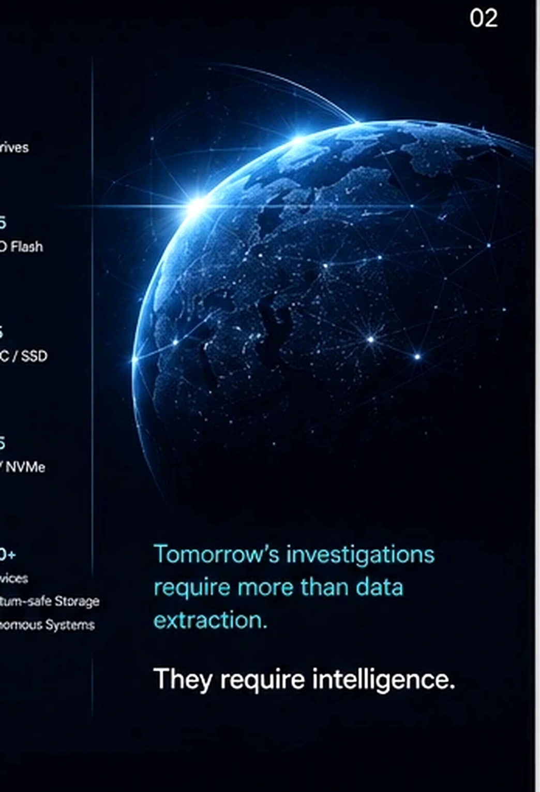
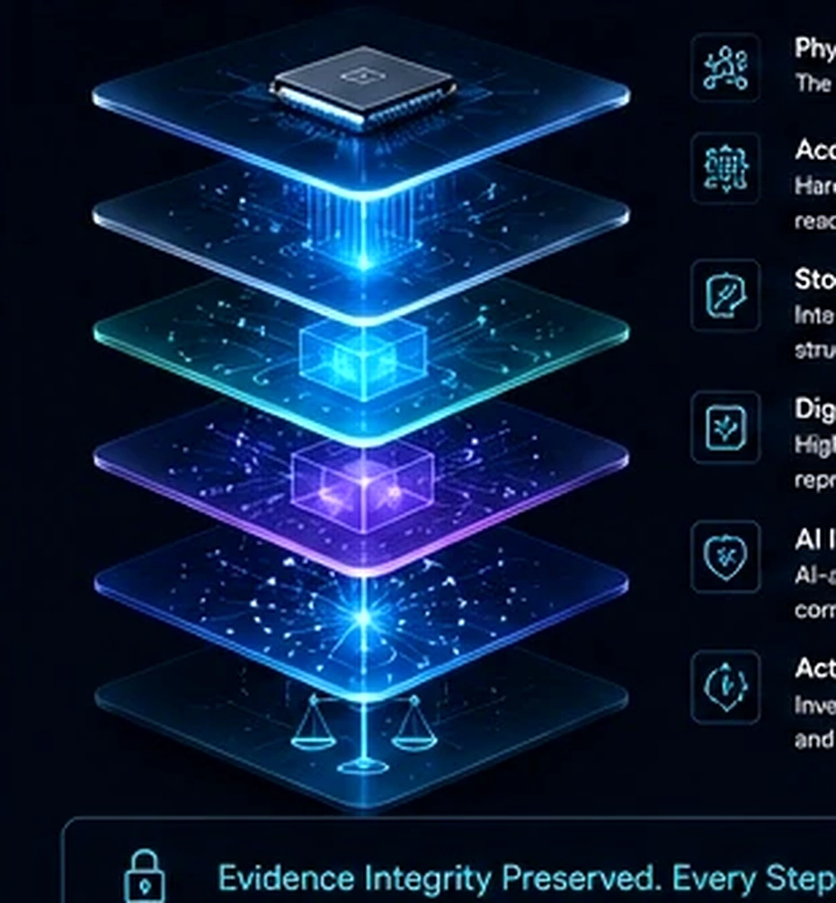
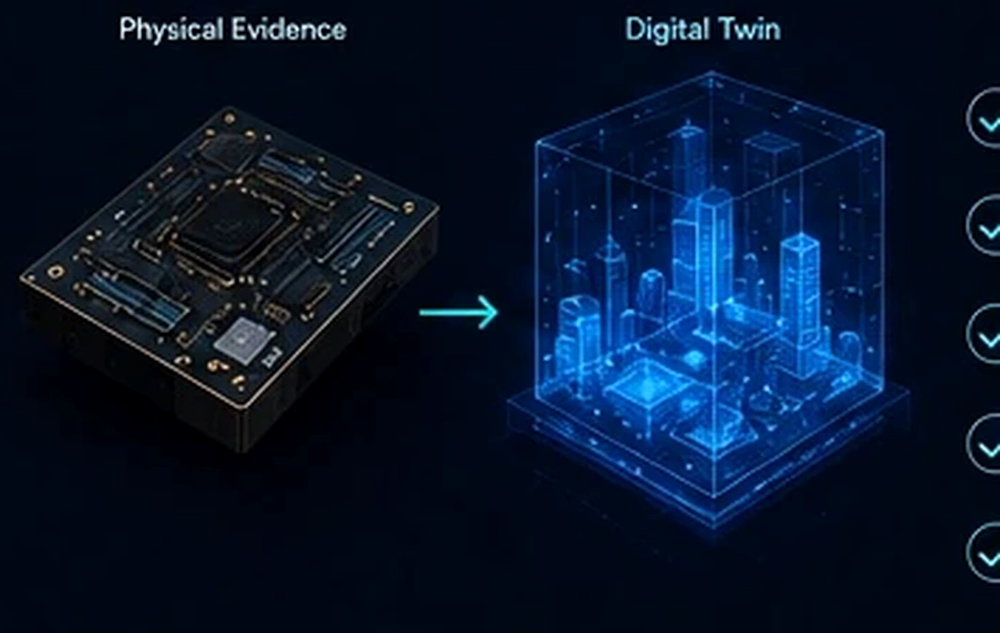

Physical Device
The source of digital evidence.
An Intelligent Digital Evidence Platform
Acquire Reality.
Understand Everything.
Hardware-assisted acquisition, storage intelligence, digital twins and investigator-led AI—integrated into one evidentiary workflow.
The Challenge
Evidence now lives across smartphones, vehicles, embedded devices, industrial systems, cloud services and critical infrastructure. Modern storage architectures make acquisition and interpretation increasingly difficult.
The challenge is no longer simply extracting data. It is understanding it.


One Platform
The source of digital evidence.
Hardware-assisted, read-only acquisition.
Reconstructs complex storage structures and filesystems.
A high-fidelity virtual representation for repeatable analysis.
Discovery, correlation, explanation and prioritisation.
Investigator-led insights and court-ready outputs.
Two Core Outcomes

Digital Twin Advantage
AI-Assisted Investigation
AI accelerates discovery. Investigators make the decisions.
Built for Those Who Protect and Serve
Explore iOtronics